| img | Name | Level | Effect | หาได้จาก |
|---|---|---|---|---|
| 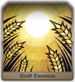 | Plentiful Harvest | ★★ | ยังไม่ปลด : เมื่อเริ่มต้นจะมีเกจ 10 % ปลดแล้ว : เมื่อเริ่มต้นจะมีเกจ 20 % |
เฟรนฟอนต์ |
| 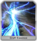 | Ley Line | ★★★ | ยังไม่ปลด : เมื่อเริ่มต้นจะมีเกจ 30 % ปลดแล้ว : เมื่อเริ่มต้นจะมีเกจ 50 % |
เฟรนฟอนต์ |
| 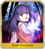 | Imaginary Number Magecraft | ★★★★ | ยังไม่ปลด : เมื่อเริ่มต้นจะมีเกจ 60 % ปลดแล้ว : เมื่อเริ่มต้นจะมีเกจ 75 % |
ทุกตู้ |
| 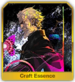 | Kaleidoscope | ★★★★★ | ยังไม่ปลด : เมื่อเริ่มต้นจะมีเกจ 80 % ปลดแล้ว : เมื่อเริ่มต้นจะมีเกจ 100 % |
ทุกตู้ |
| 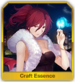 | Repeat Magic [ลิมิเต็ด] | ★★★ | ยังไม่ปลด : เมื่อเริ่มต้นจะมีเกจ 50 % และ เพิ่มประสิทธิภาพ Art 15 % 3 เทิร์น ปลดแล้ว : เมื่อเริ่มต้นจะมีเกจ 60 % และ เพิ่มประสิทธิภาพ Art 20 % 3 เทิร์น |
ตู้อีเว้น Kara no Kyoukai |
| 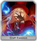 | Repeat Magic [ลิมิเต็ด] | ★★★ | ยังไม่ปลด : เมื่อเริ่มต้นจะมีเกจ 20 % และ เพิ่มอัตราเร่งเกจ 10 % ปลดแล้ว : เมื่อเริ่มต้นจะมีเกจ 30 % และ เพิ่มอัตราเร่งเกจ 15 % |
ตู้อีเว้น Kara no Kyoukai |
| 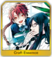 | Teacher and I [ลิมิเต็ด] | ★★★★★ | ยังไม่ปลด : เมื่อเริ่มต้นจะมีเกจ 50 % และ เพิ่มอัตราดูดดาว 300 % ปลดแล้ว : เมื่อเริ่มต้นจะมีเกจ 60 % และ เพิ่มอัตราดูดดาว 400 % |
แลกจากตั๋ว Chaldea Boys Collection 2016 |
| 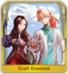 | School of Chaldea [ลิมิเต็ด] | ★★★★★ | ยังไม่ปลด : เมื่อเริ่มต้นจะมีเกจ 30 % และ เพิ่มอัตราการฟื้นฟูเลือด 20 % ปลดแล้ว : เมื่อเริ่มต้นจะมีเกจ 50 % และ เพิ่มอัตราการฟื้นฟูเลือด 30 % |
ตู้อีเว้น Da Vinci |
| 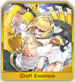 | Golden Carp Figure [ลิมิเต็ด] | ★★★★★ | ยังไม่ปลด : เมื่อเริ่มต้นจะมีเกจ 30 % และ ได้รับดาวตอนเริ่มต้นจำนวน 15 ดวง ปลดแล้ว : เมื่อเริ่มต้นจะมีเกจ 50 % และ ได้รับดาวตอนเริ่มต้นจำนวน 20 ดวง |
ตู้อีเว้น ฮิบารากิ |
| 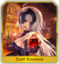 | Holy Night Dinner [ลิมิเต็ด] | ★★★★★ | ยังไม่ปลด : เมื่อเริ่มต้นจะมีเกจ 30 % และ เพิ่มการคริติคอลดาเมทอีก 10 % เพิ่มดาเมทโฮกุอีก 10 % ปลดแล้ว : เมื่อเริ่มต้นจะมีเกจ 50 % และ เพิ่มการคริติคอลดาเมทอีก 15 % เพิ่มดาเมทโฮกุอีก 15 % |
ตู้อีเว้น ฮิบารากิ |
| 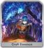 | The Cage [ลิมิเต็ด] | ★★★ | ยังไม่ปลด : เมื่อเริ่มต้นจะมีเกจ 10 % และ เพิ่มอัตราเพิ่ม NP เมื่อได้รับความเสียหาย 15 % ปลดแล้ว : เมื่อเริ่มต้นจะมีเกจ 20 % และ เพิ่มอัตราเพิ่ม NP เมื่อได้รับความเสียหาย 20 % |
ตู้อีเว้น BB |